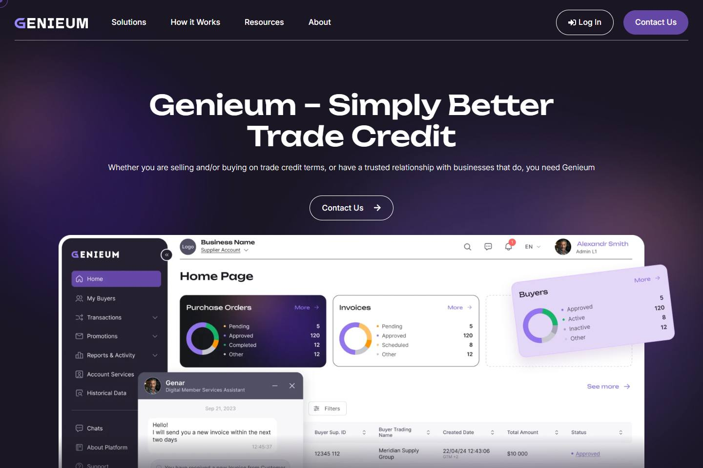

The need
Bring the platform’s Figma design into a clear, usable WordPress experience.
Selected work 01 / 05
Front-end implementation
A Figma-to-WordPress build for a platform introducing a modern approach to B2B trade credit.
Visit live website 02 / 05Project overview
02 / 05Project overview
The brief & the response
The need
Bring the platform’s Figma design into a clear, usable WordPress experience.
The approach
Build the front end in Elementor Pro while checking typography, spacing, and responsive layout against the design.
The implementation
An editable site that presents the trade credit story through a consistent page system.
The responsive experience
Explore genuine captures of the live site at four viewport widths. Scroll inside the preview to move through the full page.

No verified capture is available for this viewport.
Full-page screenshot captured from the live website.Use your keyboard or scroll over the preview.
Showing desktop capture, 1440 pixel viewport.
Behind the build
Use the Figma direction to guide the front-end implementation in Elementor Pro.
Build a consistent page system to present the platform and its trade credit proposition.
Review typography, spacing, and layout at smaller viewport widths as part of the build.
Tools & focusFigma / WordPress / Elementor Pro